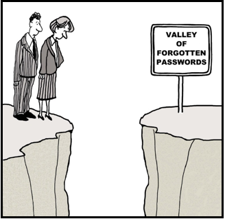
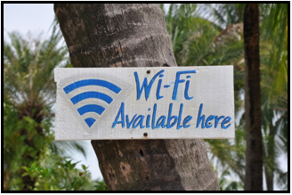
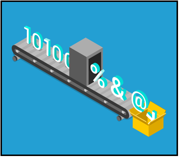

1. Адміністратор мережі проводить тренінг для офісних працівників про те, як створити сильний і ефективний пароль. Який пароль, швидше за все, займе довгий час, щоб зловмисний користувач здогадався чи зламав?
2.Споживач хоче друкувати фотографії, що зберігаються на обліковому записі в хмарі, використовуючи службу онлайн-друку третьої особи. Після успішного входу в обліковий запис хмари, клієнту автоматично надається доступ до служби онлайн-друку третьої сторони. Що дозволило здійснити автоматичну аутентифікацію?
3.Який тип технологій може перешкодити шкідливим програмам контролювати діяльність користувачів, збирати особисту інформацію та створювати небажані спливаючі оголошення на комп'ютері користувача?
4.Чому пристрої IoT представляють більший ризик, ніж інші обчислювальні пристрої в мережі?
5.Як користувачі, що працюють на спільному комп'ютері, можуть зберігати свою особисту історію перегляду від інших працівників, які можуть використовувати цей комп'ютер?
6.Користувач переглядає Інтернет, використовуючи ноутбук у громадському кафе WiFi. Що потрібно спочатку перевірити, коли користувач підключається до загальнодоступної мережі?
7. Яка конфігурація на бездротовому маршрутизаторі не вважається достатньою безпекою для бездротової мережі?

8. У користувача виникають труднощі із запам'ятовуванням паролів для кількох онлайн-облікових записів. Що є найкращим рішенням для користувача?
9.Яка технологія видаляє безпосереднє обладнання та витрати на технічне обслуговування від користувача для резервного копіювання даних?

10. Як користувач може перешкодити іншим прослуховувати мережевий трафік під час роботи комп'ютера на відкритому місці Wi-Fi?
11. Який найкращий спосіб запобігти експлуатації Bluetooth?

12. Оскільки дані зберігаються на локальному жорсткому диску, який метод захистить дані від несанкціонованого доступу?